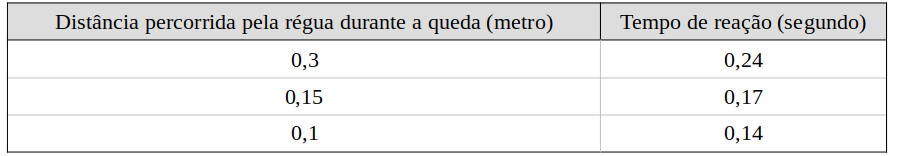

Lista de exemplos 1-8: Queda livre e lançamento vertical no vácuo
CinemáticaLista 1-8
01.
(ENEM 2011) Para medir o tempo de reação de uma pessoa, pode-se realizar a seguinte experiência:
1. Mantenha uma régua (com cerca de 30 cm) suspensa verticalmente, segurando-a pela extremidade superior, de modo que o zero da régua esteja situado na extremidade inferior.
2. A pessoa deve colocar os dedos de sua mão, em forma de pinça, próximos do zero da régua, sem tocá-la.
3. Sem aviso prévio, a pessoa que estiver segurando a régua deve soltá-la. A outra pessoa deve procurar segurá-la o mais rapidamente possível e observar a posição onde conseguiu segurar a régua, isto é, a distância que ela percorre durante a queda.
O quadro seguinte mostra a posição em que três pessoas conseguiram segurar a régua e os respectivos tempos de reação.

A distância percorrida pela régua aumenta mais rapidamente que o tempo de reação porque a
a) energia mecânica da régua aumenta, o que a faz cair mais rápido.
b) resistência do ar aumenta, o que faz a régua cair com menor velocidade.
c) aceleração de queda da régua varia, o que provoca um movimento acelerado.
d) força peso da régua tem valor constante, o que gera um movimento acelerado.
e) velocidade da régua é constante, o que provoca uma passagem linear de tempo.
GABARITO: d
02.
(UFMG) Um gato consegue sair ileso de muitas quedas. Suponha que a maior velocidade com a qual ele possa atingir o solo sem se machucar seja de 8 m/s. Então, desprezando a resistência do ar, a altura máxima de queda, para que o gato nada sofra, deve ser
03.
(PUCC) Um vaso de flores cai livremente do alto de um edifício. Após ter percorrido 320 cm, ele passa por um andar que mede 2,85 m de altura. Quanto tempo ele gasta para passar por esse andar? Desprezar a resistência do ar e assumir g = 10 m/s².
05.
Um objeto é lançado verticalmente para cima de uma base com velocidade v = 30 m/s. Considerando a aceleração da gravidade g = 10 m/s² e desprezando-se a resistência do ar, determine o tempo que o objeto leva para voltar à base da qual foi lançado.
07.
(MACK-SP) Um projétil de brinquedo é arremessado verticalmente para cima, da beira da sacada de um prédio, com uma velocidade inicial de 10 m/s. O projétil sobe livremente e, ao cair, atinge a calçada do prédio com velocidade igual a 30 m/s. Determine quanto tempo o projétil permaneceu no ar. Adote g = 10 m/s2 e despreze as forças dissipativas.
08.
Uma pulga pode dar saltos verticais de até 130 vezes sua própria altura. Para isto, ela imprime a seu corpo um impulso que resulta numa aceleração ascendente. Qual é a velocidade inicial necessária para a pulga alcançar uma altura de 0,2 m? adote g = 10 m/s2.
09.
(Enem 2013) Em um dia sem vento, ao saltar de um avião, um paraquedista cai verticalmente até atingir a velocidade limite. No instante em que o paraquedas é aberto (instante TA), ocorre a diminuição de sua velocidade de queda. Algum tempo após a abertura do paraquedas, ele passa a ter velocidade de queda constante, que possibilita sua aterrissagem em segurança.
Que gráfico representa a força resultante sobre o paraquedista, durante o seu movimento de queda?